診断
スキャンの診断段階では、アプリケーションのトラフィックと挙動を分析して、セキュリティ上の脆弱性やその他の問題点を発見します。Burp Scanner広範囲の技術を駆使して、スキャン対象に対して、網羅性が高く、完全に正確な診断を実施します。
診断フェーズ
Burp Scannerは、いくつかの診断フェーズを実行します。これらは3つの領域に分かれています:
- パッシブフェーズ
- アクティブフェーズ
- JavaScript解析フェーズ
各エリア内で複数のフェーズを実行するため、Burpは次のことが可能です:
- ユーザ入力を格納して返す関数を効果的に見つけて攻撃します。
- 頻繁に発生する問題や挿入ポイントを最適な方法で処理し、重複を避けます。
- 適切な作業を並行して実行して、システムリソースを最も効率的に使用する。
問題の種類
Burpは、セキュリティ上の脆弱性やその他の重要な情報など、膨大な種類の問題を検出できます。
問題は、診断アクティビティの性質に応じて、異なるタイプに分類できます:
- パッシブ - アプリケーションの通常のリクエストとレスポンスを調べるだけで検出できる問題です。例えば、HTTPメッセージ内のシリアライズオブジェクトなどです。
- ライトアクティブ - 少数の良性な追加リクエストで検出できる問題です。例えば、任意のオリジンを信頼しているクロスオリジンリソース共有(CORS)などです。
- ミディアムアクティブ - アプリケーションがまあまあ悪意があると見なす可能性があるリクエストで検出できる問題です。例えば、OSコマンドインジェクションなどです。
- 攻撃的アクティブ - アプリケーションやデータに大きな損害を与えるリクエストで検出できる問題です。例えば、SQLインジェクションなどです。
- JavaScript解析 - アプリケーションがクライアント側で実行するJavaScriptを解析して検出できる問題です。例えば、DOMベースクロスサイトスクリプティングなどです。これらの問題を検出する際、Burpが実行されているマシンでリソースが集中的に使用されます。これらの問題は、"パッシブ"(自己完結型DOMベースの問題など)または、"ミディアムアクティブ"(反射および蓄積型など)に分類もできます。
問題は、見つかったレベルに応じて異なるタイプにも分けられます:
- ホストレベル - アプリケーションが実行されているホストのHTTPサービスレベルで発生する問題です。例えば、寛容なFlashクロスドメインポリシーなどです。
- リクエストレベル - 個々のリクエストレベルで発生する問題です。例えば、クロスサイトリクエストフォージェリなどです。
- 挿入ポイントレベル - リクエスト内の挿入ポイントレベルで発生する問題です。例えば、ファイルパストラバーサルなどです。
挿入ポイント
Burp Scannerは挿入ポイントの概念を使用して、リクエスト内の様々な場所にペイロードを配置します。一般的に挿入ポイントとは、サーバ側アプリケーションによって特別に処理される可能性がある、リクエスト内のデータ部分を表します。次の例は、一般的なタイプの挿入ポイントを強調表示したリクエストです:
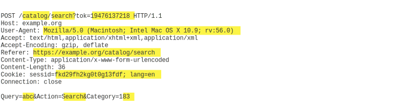Burp Scannerは挿入ポイントを個別に診断し、各挿入ポイントにペイロードを送信して、アプリケーションがその入力を処理するかどうかをテストします。
挿入ポイント内でのデータエンコード
HTTPリクエスト内の様々な場所では通常、データのエンコード方法が異なります。Burp Scannerは、挿入ポイントの種類によってペイロードに適切なエンコーディングを自動的に適用し、関連するアプリケーション機能に生のペイロードが確実に到達するようにします。たとえば、標準のボディパラメータでも、異なるエンコーディングが適用されます:
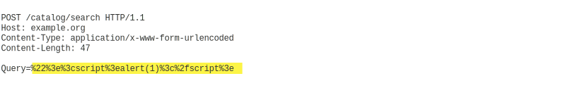JSONデータ内の場合:
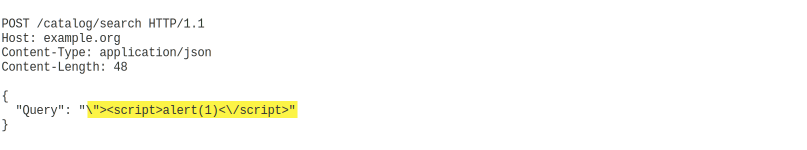XMLデータ内の場合:
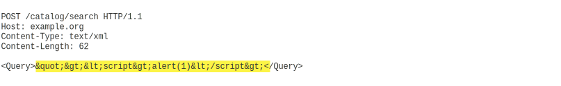Burp Scannerは、Base64など、挿入ポイントの種類に関連しない他のタイプのエンコーディングをアプリケーションが使用していることも検出します。
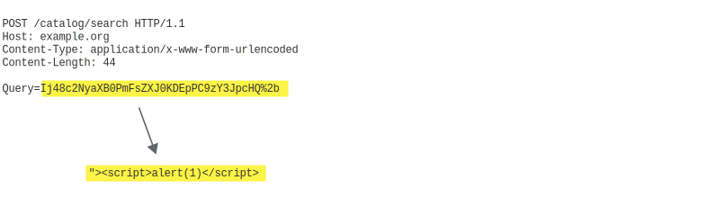ネストされた挿入ポイント
一部のアプリケーションは、同じデータに対して多段階のエンコーディングを適用し、あるフォーマットを別のフォーマットの中に効果的にネストします。Burp Scannerはこの動作を検出し、ペイロードに対して同じ階層のエンコードを自動的に適用します。
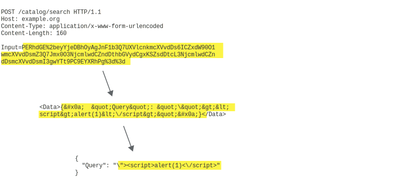パラメータ位置の操作
一部のアプリケーションでは、特定タイプのパラメータに入力を配置させますが、異なるタイプのパラメータで入力を行っても実際は処理されることがあるでしょう。これは一部のプラットフォームで、アプリケーションがリクエストから入力を取り出す際のAPIが、パラメータがどこに入力されたかとは無関係に取り出すために発生します。ただし、Webアプリケーションファイアウォールなど、アプリケーションの周囲にある一部の防御機能は、元のパラメータタイプにのみ適用される場合があります。
Burpはこの動作を悪用し、挿入ポイントのパラメータタイプを変更し、防御を突破して脆弱なアプリケーション機能に到達するリクエストの作成もできます。例えば、ペイロードがURLクエリーストリングパラメータとして送信される場合、Burpは対応するパラメータをボディパラメータやcookieで送信する場合があります:
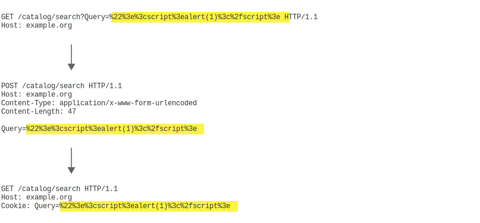自動セッションハンドリング
自動クロールに続いてBurp Scannerの診断が行われる場合、クロール結果を利用して診断中のセッションを自動的に維持できます。ユーザの設定は不要です。
Burpは個々のリクエストを診断する際、クロールの開始位置からそのリクエストに到達する最短経路を特定します。
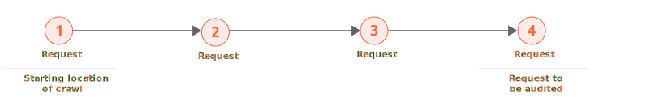そして、有効なセッション内で同じリクエストを繰り返し送信する、最も効率的な方法を決定します。最初に経路を再巡回して新鮮なセッショントークンのサンプルを取得し、経路を様々な方法で単純化したテストを行い、セッションが正しく維持されているかどうかを確認します。
多くの場合、最終リクエストを何度も何度も再発行ができます。リクエストにセッショントークンがまったく含まれていない場合に可能です:
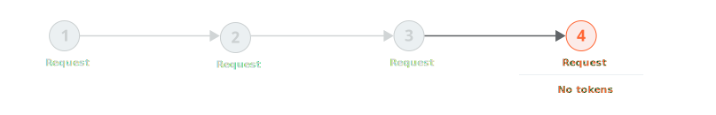あるいは、セッショントークンがcookieだけにあり、通常は複数回使用できます:
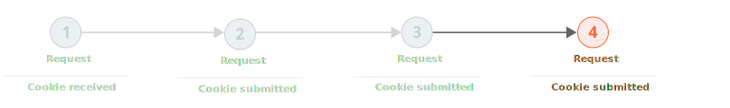または、リクエストにcookieとCSRFトークンの両方が含まれており、CSRFトークンを繰り返し使用できる場合も可能です:
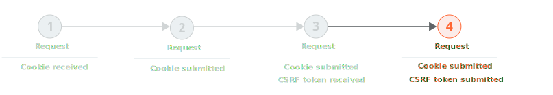場合によって、診断するリクエストを発行する前に、前のリクエストを発行する必要があります。これは通常、アプリケーションがワンタイムCSRFトークンを使用する場合に発生します。トークンが1回しか使用できない場合、新しいトークンを取得するためにその都度先行したリクエストを再発行する必要があります。
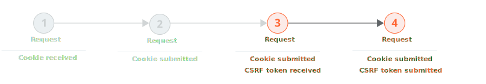極端な場合、リクエスト間のすべての遷移がワンタイムトークンによって保護されます。これは、ナビゲーションが綿密に制御されている高セキュリティアプリケーションでたまにあります。この状況で、診断されるリクエストを繰り返し発行する最も信頼性の高い方法は、常に開始位置に戻り、そのリクエストへの完全な経路をたどることです。
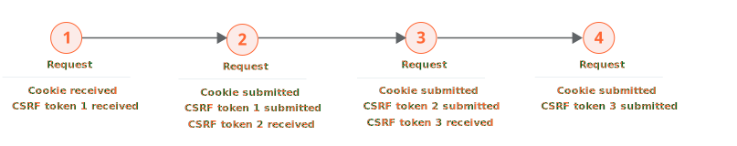診断するリクエストを繰り返し発行する最も効率的な方法が決定すると、診断が実行されます。さまざまな診断チェックを実行しながら、Burpはアプリケーションのレスポンスを定期的に監視して、有効なセッションが確実に維持されるようにします。Burpがセッションの有効性を確実に確認すると、全て完了した診断チェックにチェックポイントが設定されます。セッションが無効になったとBurpが認識した場合、最新のチェックポイントにロールバックしてそこから再開します。このロジックは、セッション管理のオーバーヘッドを最小限に抑え、セッションが頻繁に失われた場合の無限ループを回避する方法で実行されます。例:
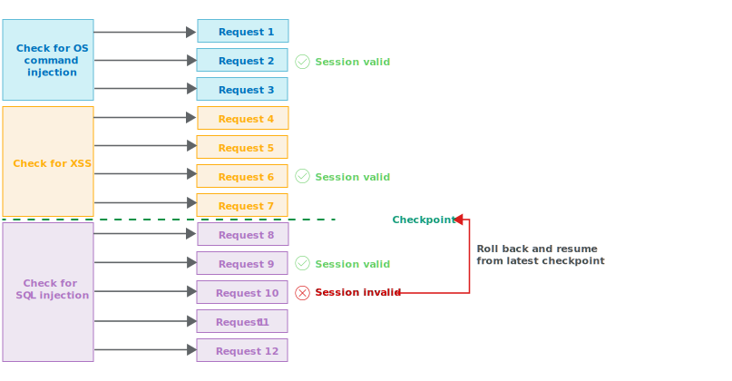重複の回避
Burp Scannerは、重複した作業や重複した問題の報告を最小限に抑えるために、さまざまな手法を使用します。
頻繁に発生するパッシブ問題の統合
一部のパッシブに検出された問題(クロスサイトリクエストフォージェリやクロスドメインスクリプトインクルードなど)は、開発で選択したアプローチやページテンプレートの再利用によるもので、アプリケーション内のさまざまな場所に存在する可能性があります。一部の問題は、プラットフォームレベルの設定 (厳密なトランスポートセキュリティが実施されていないなど)のために、アプリケーション全体に存在することもあります。このような場合Burp Scannerはデフォルトで、ホストのWebルートや全ての問題が見つかった特定のフォルダなど、該当するレベルに問題を集約し1つだけ報告して、重複した問題の生成を回避します。
頻繁に発生する挿入ポイントの処理
一部の挿入ポイントは、アプリケーションで使用されるリクエストの多くまたは全てに存在していて、しかし興味深い攻撃経路ではないことがあります。例えばcookieで、一度セットされるとその後の全てのリクエストで送信されます。あるいはキャッシュバスターは、URLクエリーストリング内にありキャッシュを防止しますが、サーバ側のアプリケーションでは処理されません。これらの挿入ポイントを、リクエスト毎に全て診断を実行すると、無駄な作業にかなりの負荷が発生する可能性があります。このような場合Burp Scannerはデフォルトで、ほぼ問題がみつからない挿入ポイントを判別し、これらの挿入ポイントには軽度な診断を行うようになります。軽度な診断で、サーバ側の処理を示す興味深い挙動を見つけた場合は、Burpは通常通り挿入ポイントの完全な診断を実行し続けます。
JavaScript解析
Burp Scannerは、アプリケーションレスポンス内のJavaScriptを解析し、様々なDOMベースの脆弱性を発見します。これを行うには、静的解析と動的解析を組み合わせて使用します:
- 静的解析 - JavaScriptコードを解析して抽象構文木 (ATS)を構築します。これによって、攻撃者が制御できる可能性がある汚染されたソースと、攻撃の実行に使用される危険なシンクを識別します。コード内で起こりうるデータフローを分析し潜在的なパスを発見し、汚染されたソースから入った悪意のあるデータが危険なシンクに渡る可能性がある経路を特定します。
- 動的解析 - ヘッドレスの組み込みブラウザにレスポンスを読み込みます。攻撃者が制御できる可能性がある場所のDOMにペイロードを挿入し、レスポンス内でJavaScriptを実行します。またマウスイベントを作成して、(onclickイベントハンドラーなど)可能な限り多くのコードを網羅しようとします。攻撃の実行に使用できる危険なシンクを監視し、挿入したペイロードがそれらのシンクに到達したかを特定します。
静的アプローチと動的アプローチには、それぞれに長所と短所があります。
- 静的解析では、動的解析中には実際に実行されない、適切な状況で実行できるコードパスを発見できるため、動的解析が見逃す脆弱性がいくつか見つかります。例えば、実行中の分岐は、攻撃者が制御する多数のパラメータで制御される可能性があります。静的解析ではこの分岐を識別して分析しその中の汚染された経路を発見できますが、動的解析では、実際に使用されるパラメータの組み合わせによってその動作を実行できない可能性があります。しかし静的解析はその性質上、過剰検知をしがちです。なぜなら、コードの分岐の組み合わせが実際には実行できない場合や、個別のデータ検証ロジックを理解できないため、ソースからシンクへの汚染された経路が実際には悪用できない場合があります。
- 動的解析は、逆の特徴があります。汚染されたデータがソースからシンクに渡るのを実行中に実際に観察するため、この動作は脆弱性の具体的な証拠になり、過剰検知が起こりにくくなります。しかし、アプリケーションの現在の状態や他のデータの値によって、汚染されたデータがシンクに到達しない場合は、検出漏れを起こす可能性があります。しかし実際は攻撃者は両方ともコントロールできるかもしれません。
Burp Scannerは、静的および動的アプローチの両方の利点を活用します。可能であれば、2つの手法の結果を対応付け、両方を使用して得られた証拠とともに問題を報告します。これらの問題は、盤石な発見と見なされ、"確信"と報告されます。静的分析だけで潜在的な問題を検出した場合は、報告された問題の信頼度を下げます。JavaScript解析に対するこの統合されたアプローチは、最も重要な問題を見つけるために結果をレビューするテスターを大いに支援します。
アプリケーションエラーの処理
Webアプリケーションの完全な診断は侵入的な手法であり、スキャンの進行中に接続障害、送信タイムアウト、バックエンドコンポーネントの停止などの問題が発生することがよくあります。さらに、Webアプリケーションファイアウォールのような防御機能は、特定のペイロードや、特定のパラメータ値の予期しない値に基づいて、特定の接続を切断する可能性があります。
診断プロセス中、Burpはエラー状態の発生を可能な限り詳細に追跡します。個々のアクションでエラーが発生した場合、Burpはそのアクションを失敗としてマークし、次のアクションに移動します。必要に応じて、同じレベルのアクティビティーで繰り返しアクションが失敗すると、そのレベル全体が失敗とマークされます。したがってBurpは、個々の診断チェック、個々の挿入ポイント、診断するリクエスト全体、最終的にはスキャン全体と、徐々に失敗をマークしていきます。
特定の診断リクエストで個別のエラーが発生するのは一般的であるため、Burpはまずエラーの詳細を取得してスキャンを続行します。診断がすべてしたとき、失敗した操作を再試行するために何回か追加確認も実行できます。特定のアプリケーションコンポーネント(バックエンドのデータベースなど)でスキャンの一部に問題が発生した場合に便利です。大量のエラーが発生した場合はスキャンの一時停止または中止もでき、ユーザは問題を調査しアプリケーションが安定してからスキャンを再開または再実行ができます。